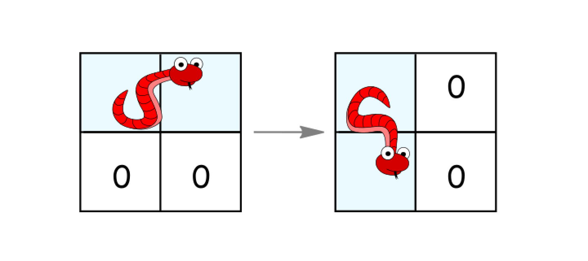
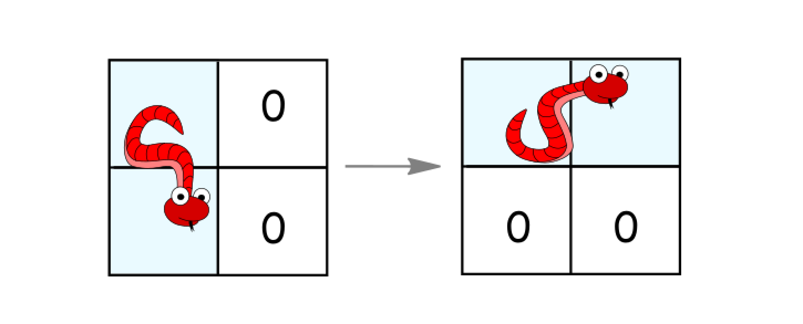
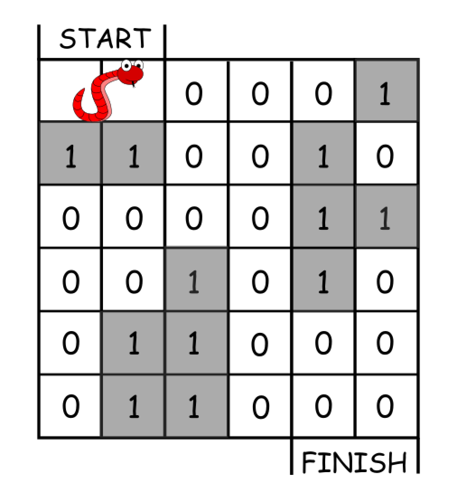

| Category | Difficulty | Likes | Dislikes |
|---|---|---|---|
| Algorithms | Hard | 281 | 75 |
kakao
In an n*n grid, there is a snake that spans 2 cells and starts moving from the top left corner at (0, 0) and (0, 1). The grid has empty cells represented by zeros and blocked cells represented by ones. The snake wants to reach the lower right corner at (n-1, n-2) and (n-1, n-1).
In one move the snake can:
(r, c) and (r, c+1) to (r, c) and (r+1, c).
(r, c) and (r+1, c) to (r, c) and (r, c+1).
Return the minimum number of moves to reach the target.
If there is no way to reach the target, return -1.
Example 1:

Input: grid = [[0,0,0,0,0,1],
[1,1,0,0,1,0],
[0,0,0,0,1,1],
[0,0,1,0,1,0],
[0,1,1,0,0,0],
[0,1,1,0,0,0]]
Output: 11
Explanation:
One possible solution is [right, right, rotate clockwise, right, down, down, down, down, rotate counterclockwise, right, down].Example 2:
Input: grid = [[0,0,1,1,1,1],
[0,0,0,0,1,1],
[1,1,0,0,0,1],
[1,1,1,0,0,1],
[1,1,1,0,0,1],
[1,1,1,0,0,0]]
Output: 9
Constraints:
2 <= n <= 1000 <= grid[i][j] <= 1